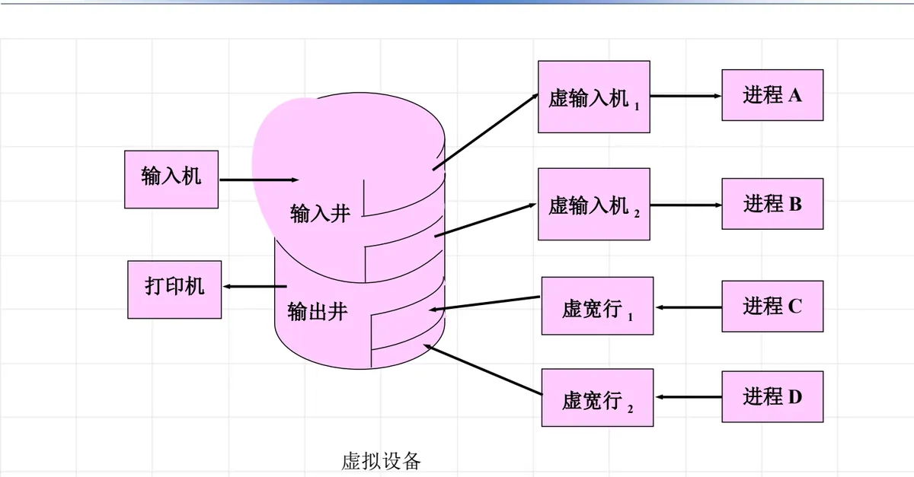
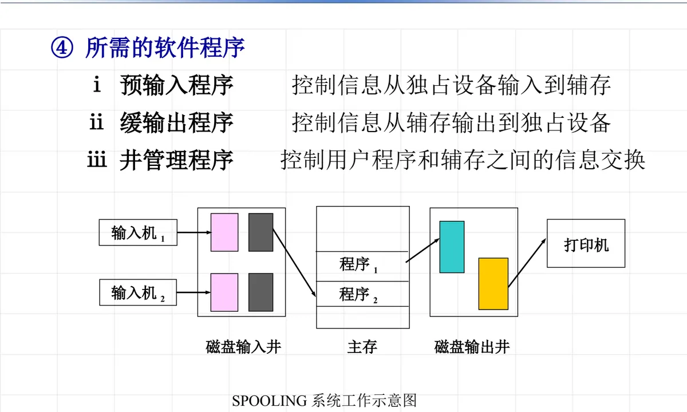

操作系统原理 · 第 8 章 设备管理
8.3 设备分配
8.1 节把「设备分配与回收」列为设备管理的基本功能，8.2 节讲的是数据在传输途中先缓冲在哪里；这一节回答的是更前置的问题：设备分给谁用、用多久、按什么次序满足请求。线索有三条——先按设备的使用特性分清独享分配、共享分配和虚拟分配三种技术，再看每种技术对应的静态分配与动态分配方式，以及先请求先服务、按优先级两种分配算法；最后落到 SPOOLing（假脱机）系统，看操作系统怎样把一台慢速的独占设备改造成可供多个进程同时使用的虚拟设备。
1. 三种设备分配技术
设备能不能同时给多个进程用，取决于设备本身的物理特性。打印机只有一个走纸机构，两个进程的输出交错打上去，结果谁也读不懂；磁盘则天生支持多个进程按块存取，互相并不干扰。课件据此把常用的设备分配技术归为三种：独享分配、共享分配和虚拟分配。
需要提醒的是，分配技术解决的是「这类设备允许怎么用」，落到具体操作上还要回答两个问题：什么时候分配（分配方式）、多个请求排队时先满足谁（分配算法）。8.1 节已经提到设备分配的两种方式——应用程序级的静态分配与进程级的动态分配，下面把它们与三类设备对应起来看。
2. 独享分配：独占设备的静态分配
只适合一个程序独占使用的设备称为独享设备，例如输入磁带机、打印机。它们的共同特点是：
- （1）I/O 操作费时，或者需要人工干预，例如打印机要人工装纸、处理卡纸；
- （2）多人同时使用会混乱，例如两个进程的输出交叉打印在一起，结果无法辨认。
对独享设备一般采用静态分配：在一个作业执行前，将它所要使用的设备分配给它；当它结束撤离时，再把分配给它的这类设备收回。这正对应 8.1 节所说的应用程序级分配——程序进入系统时分配，退出系统时收回全部资源。静态分配的好处是简单、不会死锁；代价是设备在整个作业运行期间都被占住，即使中间根本不用，别的作业也申请不到，利用率自然不高。
3. 共享分配：共享设备的动态分配
能由多个作业、进程共同使用的设备称为共享设备，磁盘设备是典型代表。共享设备的特点是：
- （1）可直接访问或随机访问，不必从头顺序找起；
- （2）能够快速存取，多个进程交替使用时的切换开销很小。
对共享设备一般采用动态分配：当进程提出资源申请时，由设备模块进行分配；进程使用完毕后立即归还。这与 8.1 节的进程级动态分配一致——分配和回收的单位是进程的每一次请求，而不是整个作业。设备在一次使用结束到下一次申请之间可以转给别人，利用率因此比静态分配高得多；代价是分配时机分散在进程运行过程中，需要考虑请求排队与死锁问题（第 5 章 5.3 节起讨论）。
4. 设备分配算法：先请求先服务与按优先级
无论静态分配还是动态分配，当多个请求同时竞争同一台设备时，都要按某种算法决定设备请求队列中谁先得到满足。课件给出两种：
- 先请求先服务：按请求到达的先后次序排队，先到先得，公平且不会饿死；
- 按优先级高低：为每个请求指定优先级，优先级高的排在前面先得到设备。
这两种算法并不陌生。第 5 章 5.2 节「资源的分配机制和策略」讲的就是同一套思路：先来先服务（FCFS）按到达次序排队，优先调度策略则按优先级把新请求插到队列中相应位置。设备分配只是把这套通用策略落到设备请求队列上，队列中的元素是进程的 I/O 请求。
5. 虚拟分配：用虚拟技术把独占设备改造成共享设备
到这里，两类设备的处境都不理想：独占设备只能静态分配，不利于提高系统效率；慢速设备传输数据又会延长程序的处理时间。矛盾在于——设备本身不适合共享，可进程又需要并发地使用它。既然无法改变设备的物理特性，就换一个思路：用别的资源把它「顶替」掉。
虚拟技术指的正是这种做法：利用系统中便于共享的、快速的存储设备，来替代不适合共享的、慢速的字符设备，采用预先收存、延迟发送的方式，把慢速独占设备转化为快速可共享设备。两个关键动作是：
- 预先收存：系统先把从独占设备输入的信息复制到辅存；当进程需要从输入设备读入信息时，改从辅存读入；
- 延迟发送：输出时，先把要输出的信息存入辅存，在适当的时候（上一次操作执行完毕或信息完整时），再发送给输出设备。
这样一来，真正与慢速设备打交道的只剩下操作系统，进程面对的不再是那台独占设备，而是一块可以共享的辅存空间。通常把用来代替独占型设备的那部分辅存空间（包括有关的控制表格）称为虚拟设备；课件也注明，它也可以是内存中的链表等数据结构。这与第 5 章 5.1 节把「虚拟技术」列为虚拟资源是同一个道理：把独占的物理资源改造成逻辑上可共享的资源，用廉价、快速的共享资源去掩盖昂贵、慢速的独占资源。
6. SPOOLing（假脱机系统）
虚拟设备最经典、最完整的实现就是 SPOOLing 系统（Simultaneous Peripheral Operations On-Line，假脱机系统），它提供外围设备同时联机操作的功能。
（1）设计思想：预输入与缓输出
- 预输入：在应用程序需要数据之前，操作系统已把所需数据预先输入到辅存的输入井中存放；当应用程序（或进程）需要数据时，可直接从辅存读入主存。
- 缓输出：在应用程序执行时，将输出数据写入辅存的输出井中；当应用程序（或进程）执行完毕（或需要输出时），再由操作系统将数据输出到设备上。

看图 1 的布局：物理上只有一台输入机和一台打印机，进程 A、B 却各自分到一台「虚输入机 1」「虚输入机 2」，进程 C、D 也各自分到一台「虚宽行」，中间隔着的就是输入井和输出井。进程读数据时并不直接访问输入机，而是从输入井取；写数据时也不直接占用打印机，而是写进输出井。独占的物理设备被辅存「挡」在身后，多个进程于是可以同时「使用」同一台设备——这就是虚拟设备名称的由来。
（2）什么是 SPOOLing 系统
SPOOLing 系统利用通道和中断技术，在主机控制之下，由通道完成输入输出工作。系统提供一个软件系统（包括预输入程序、缓输出程序、井管理程序，以及预输入表、缓输出表等数据结构），它提供输入收存和输出发送的功能，使外部设备可以并行操作——这一软件系统就称为 SPOOLing 系统。可以这样理解它的分工：用户程序只管往井里放、从井里取，井的读写在主机控制下由通道完成，慢速设备真正需要的动作则被推迟到合适的时候集中去做。
（3）SPOOLing 系统的优点
- ① 提供虚拟设备——把独占设备改造成逻辑上可共享的设备；
- ② 外围设备同时联机操作——多台设备与主机并行工作；
- ③ 加快作业处理速度——进程不必等待慢速设备的每一次动作。
（4）实现 SPOOLing 系统的基础
- ① 大容量的辅存空间：在辅存上需开辟两个较大的输入井和输出井，用以存放大量应用程序的输入信息和输出信息；
- ② 硬件基础：通道装置、中断系统；
- ③ 数据结构：预输入表、缓输出表；
- ④ 所需的软件程序：即（2）中与表格并列列出的预输入程序、缓输出程序、井管理程序，分别对应预输入、缓输出和两个井的管理。

图 2 把四件基础摆在一起：主存中运行的程序 1、程序 2 是「用户」；输入机 1、输入机 2 和打印机是慢速的物理设备，它们由通道装置在主机控制下驱动；磁盘输入井与磁盘输出井是辅存上开辟的大块空间；预输入表、缓输出表则记录井中每个作业的数据位置，井管理程序靠它们完成分配与回收。四者凑齐，预输入与缓输出才能在没有用户程序干预的情况下自动进行。
本节小结
- 设备按使用特性分为独享设备与共享设备，对应三种分配技术：独享分配（静态分配）、共享分配（动态分配）、虚拟分配；
- 独享设备（输入磁带机、打印机）费时或需人工干预、多人使用会混乱，采用静态分配——作业执行前分配、撤离时收回；共享设备（磁盘）可随机访问、存取快，采用动态分配——申请时分配、用完立即归还；
- 设备分配算法有先请求先服务与按优先级高低两种，与第 5 章 5.2 节的 FCFS 和优先调度策略同源；
- 虚拟技术用便于共享的快速存储设备替代不适合共享的慢速字符设备，靠预先收存、延迟发送把慢速独占设备转化为快速可共享设备；替代独占设备的那部分辅存空间（含有关控制表格）称为虚拟设备；
- SPOOLing（假脱机）系统是虚拟设备的经典实现：设计思想是预输入与缓输出，基础是大容量辅存（输入井、输出井）、通道与中断、预输入表/缓输出表等数据结构以及相应的软件程序，优点是提供虚拟设备、外围设备同时联机操作、加快作业处理速度。